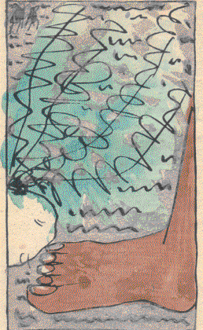
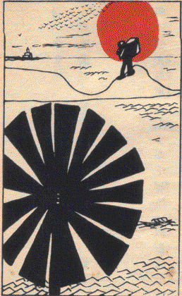
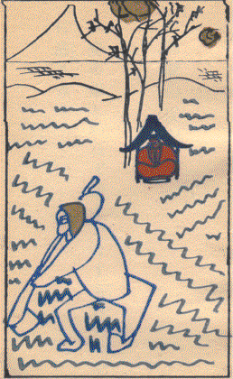
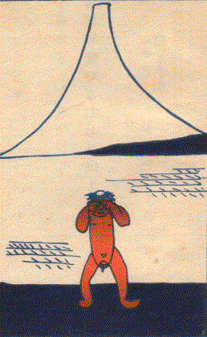

| 雲母集 | |
| 北原 白秋 | |
| (2015) | |
雲母集
北原白秋
きらら
。 雲母。うんも。玉
のたぐひにて、五色
のひかりあり。深山
の石
の間
にいでくるものにて、紙
をかさねたるごとくかさなりあひて、剝
げば、よくはがれて、うすく、紙
のやうになれども、火
にいれてもやけず。水
にいれてもぬるゝことなし。和名（雲母和名、岐良々）
『日本大辞林』
煌々
と光りて動く山ひとつ押し傾
けて来
る力はも
煌々
と光りて深き巣のなかは卵ばつかりつまりけるかも
大きなる手があらはれて昼深し上から卵をつかみけるかも
かなしきは春画の上にころがれる七面鳥の卵なりけり
大鴉一羽渚に黙
ふかしうしろにうごく漣の列
大鴉一羽地に下り昼深しそれを眺めてまた一羽来し
昼渚人し見えねば大鴉はつたりと雌
を圧
へぬるかも
大鴉渚
歩
けど麗
らなる波はそこまでとどかざりけり
寂光
の浜に群れゐる大鴉それの真上
にまた一羽来し
一羽飛び二羽飛び三羽飛び四羽五羽飛び大鴉いちどに飛びにけるかも
大空の下
にしまし伏したり病鴉
生きて飛び立つ最後に一羽
水の面
に白きむく犬姿うつし口には燃ゆる紅
の肉
丸木橋
の上と下とを真白きもの煌々
として通りけるかも
水の面に光ひそまり昼深しぬつと海亀息吹きにたり
日ざかりは巌を動かす海蛆
もぱつたりと息をひそめけるかも
鱶
は大地
の上は歩
かねばそこにごろりところがりにけり
ふかぶかと眼
ひらけばどん底に何か光りて渦巻くらしも
盤石
に圧し伏せられし薔薇
の花石をはねのけ照
深みかも
大空に何も無ければ入道雲むくりむくりと湧きにけるかも
大正二年一月二日、哀傷のあまりただひとり海を越えて三崎に渡る。淹留旬日、幸に命ありてひとまづ都に帰る。これわが流離のはじめなり。
雪深し黙
みゐたれば紅
の月いで方となりにけるかな
思ひきや霧の晴間
のみをつくし光りゆらめく河下見れば
朝霧にかぎり知られぬみをつくしかぎりも知らぬ恋もするかな
朝霧に光りゆらめくみをつくしいまだ死なむと吾が思はなくに
日だまりに光りゆらめく黄薔薇
ゆすり動かしてゐる鳥のあり
黄薔薇
光りゆらめくとも知らず雀飛び居りゆらめきつつも
寂しさに浜へ出
て見れば波ばかりうねりくねれりあきらめられず
寂しさに男三人浜に出
で三人そろうてあきらめられず
海人
が子が潜
り漕ぎたみみるめ刈るここの漣かぎり知られず
八景原の崖に揺れ揺るかづらの葉かづら日に照るあきらめられず
小牛ゐて薊食
み居り八景原小牛かはゆしあきらめられず
来て見ればけふもかがやくしろがねの沖辺はるかにゆく蒸汽
のあり
日が照る海がかがやく鰯船板子
たたけりあきらめられず
八景原
春の光は極みなし涙ながして寝ころびて居る
あまつさへ日は麗らかに枯草のふかき匂ひもひもじきかなや
日の光ひたと声せずなりにけり何事か沖に事あるらしや
ただひとつ紅
き日の玉くるくると沖にかがやくあきらめられず
空赤く海また赤し八景原
なかのとんがり山なぜ黒いぞな
雲雀啼く浦の廓
の田圃
みち行けばさびしもまだ日は暮れず
何かしら笑ひ泣きする心なり野菜畑に鰯ころがる
来て見れば鰯ころがる蕪畑
蕪みどりの葉をひるがへす
日暮るれば枯草山の枯草をただかきわけていそぐなりけり
夕されば涙こぼるる城
ヶ島人間ひとり居らざりにけり
おめおめと生きながらへてくれなゐの山の椿に身を凭
せにけり
夕暮の余光のもとをうち案じ空馬車馭してゆく馭者のあり
屋根の太陽
は赤く澱
みて石だたみ古るき歩道
に暮れ落ちにけり
夕されば大川端に立つ煙重く傾むく風吹かむとす
悲しくも思かたむけいつとなくながれのきしをたどるなりけり
風寒く夕日黄
ばめり冬の水いま街裏
を逆押してゆく
夕さればひとりぽつちの杉の樹に日はえんえんと燃えてけるかも
あかあかと枯草ぐるまゆるやかに夕日の野辺を軋
むなりけり
悲しともなくてなつかしかがやかに夕日にかへる枯草ぐるま
道のべの道陸神
よあかあかと日照り隈
なし道陸神よ
日は暮れぬ人間ものの誰知らぬふかき恐怖 に牛吼えてゆく
大正二年四月下浣、家をあげて三崎向ヶ崎に移る。
恍惚
とよろめきわたるわだつうみの鱗
の宮のほとりにぞ居る
水あさぎ空ひろびろし吾が父よここは牢獄
にあらざりにけり
深みどり海はろばろし吾が母よここは牢獄
にあらざりにけり
不尽
の山れいろうとしてひさかたの天
の一方におはしけるかも
ほがらかに天
に辷
りあがる不尽
の山われを忘れてわがふり仰ぐ
わがこころ麗
らかなれば不尽の山けふ朗らかに見ゆるものかも
不尽
の山麗
らかなればわがこころ朗らかになりて眺め惚れて居る
ある時
父母
と海にうち出でめづらかに浮世がたりを吾がするものか
不尽
見ると父母
のせてかつをぶね大きなる櫓をわが押しにけり
垂乳根
のせちに見むといふ不尽
の山いま大空にあらはれにけり
大方
にうれしきものを不尽の山わが家
のそらに見えにけるかも
大きなる櫓櫂かついで不尽の山眺め見わたす男なりけり
魚
かつぎ丘にのぼれば馬鈴薯
の紫の花いま盛りなり
れいろうと不尽
の高嶺
のあらはれて馬鈴薯畑
の紫の花
ある時は眼
ひきあけ驚くと鮮
やかなる薔薇
の花買ひにけり
ある時は命さびしみ新らしき蠣
の酢蠣を作らせにけり
ある時は大地
の匂ぷんぷんとにほふキヤベツの玉もぎて居り
ある時は独
行くとてはつたりと朱の断面に行き遇ひにたり
ある時は巣藁代へむとせしかどもその巣に卵のうまれてありけり
ある時は赤々と日のそそぎやまぬ首縊
りの家を見恍
れてゐたり
ある時は何も思はず路のべの赤馬
の尻毛に手
を触
れてゐつ
ある時は遠眼鏡もて虔
ましくあそぶ千鳥を凝視
めてあるも
ある時は小さき花瓶
の側面
にしみじみと日の飛び去るを見つ
ある時はおのが家内
を盗人
のごとく足音
をぬすみてあるも
ある時は誰知るまいと思ひのほか人が山から此方
向いてゐる
ある時はただ専念
に一匹の大鯛釣ると坐りたりけり
生きの身の吾が身いとしみ牛の乳
まだきに起きてまづ吸ひにけり
生きの身の吾が身いとしも鯛釣るとけふも岬の尖端
に出
で
生きの身の吾が身いとしくもぎたての青豌豆の飯
たかせけり
麪麵
を買ひ紅薔薇
の花もらひたり爽やかなるかも両手
に持てば
生きの身の吾が身いとしみしくしくと腐れ鮑 を日に干しにけり
水垂
の岩の峡
を垂る水の蕭々
として真昼なりけり
水垂の松のかげゆくあはれなり麗らなる日のべら釣り小舟
城ヶ島の白百合の花大きければ仰ぎてぞあらむあそびの舟は
大きなる匍ひ下り松の枝の上漣かがやき鳥ひとつゐる
海雀つらつらあたまそろへたり光り消えたり漣見れば
この憎き男たらしがつつじの花ゆすり動かしていつまで泣くぞ
深潭
の崖の上なる紅躑躅
二人ばつかり照らしけるかも
恐ろしき淵のまはりを海雀光り列
なめ飛び居りあはれ
かき抱けば本望安堵の笑ひごゑ立てて目つぶるわが妻なれば
帰命頂礼この時遥か海雀光りめぐると誰か知らめや
帰命頂礼消えてまた照る海雀人は目をとぢ幽かにひらき
帰命頂礼誰し知らねば海雀耀きの輪をつくりまた消
つ
しんしんと淵に童
が声すなれ瞰下
せば何もなかりけるかも
深潭
にちららちららと白雪
のけはひつめたく沈む人かも
いつまでも淵に潜
りの影見えずあまり深くも潜
りけむかも
潜
りの子真逆
さまに頭より躍り入りたり親の子なれば
この淵にひそみて久し潜りの子親の子なれば玉藻刈るらむ玉藻刈るらむ
恋しけどおゆき思はず蓴菜
の銀の水泥
を掌
に掬ひ居つ
人なればわれもまことに憔悴す蓴菜光れこの沼深く
蓴菜を掬へば水泥
掌
にあまりて照り落つるなりまた沼ふかく
明るさや寥しさや人も来ず裸になれど泣くすべ知らずも
寂しけどおのれ耀き頸
かぶす膝までも深く泥
に踏み入り
驚きてつくづく見れば鰻なり一面に光る沼のまんなか
この沼ゆなにか湧きあがる恐ろしき光ある見て逃げ上るわれは
照りかへる薄
苅萱
さみどりのひろびろし野にほつと出でつも
眼鏡橋
くぐりゆく水のをりをりに深く耀きやがて消えつも
流れかね耀
きの輪を水つくるそこに野菜を洗へり真青
に
日ざかりは短艇
動かず水ゆかず潟
はつぶつぶ空は燦々
寂しけど何も思はずこの潟
の銀泥
の中に櫂を突き入れ
わが短艇
力いつぱい動かすと櫂を突き入れ突きかがまるも
眼鏡橋
を中にわたして茶屋三戸ここの廓
は日の照るばかり
日の光いつぱいに照る眼鏡橋誰か越えむとする眼鏡橋
眼鏡橋に西瓜断ち割る西瓜売今ぞ廓
は昼寝のさかり
真昼間
子どもつまづきしばらくは何の声だにせざりけるかも
眼鏡橋の眼鏡の中から眺むれば柳一本
風にゆらるる風にゆらるる
寂しけど麦稈帽子ゆ照りこぼるる夏の光を凝視
めて行くも
寂しけど煌々と照るのぼり坂ただ真直
にのぼりけるかも
幅びろの光なだるるなだら坂動くばかりに見えにけるかも
崖の上に照りてゆらめくものひとつ大いなる百合と見て通りたり
寂しさに油壺から小網代
へ歩みかへせど昼ふかみかも
寂しさに山の真昼の赤鳥居深くくぐりてまた出
て来るも
屁
の神の赤き祠
の真つ昼間大肌になりて汗ふきにけり
草ふかき切りそぎ崖に大きなる男寝て居る寂しきものか
鵜の鳥と共に飛ばむとしたりしか鵜の鳥飛ばんとして飛びてゆく
飛びかける鳥につかまれ燦
めく魚生きたる心地もなかるらむあはれ
飛びかける鳥魚をつかみあはれあはれ輝きの空に墜
ちなむとする
しみじみと海のはたてに見し煙いつのまにやら大船となる大船となる
いつまでも向う向きたる人の頭いよよ光ればいよよ憎しも
城ヶ島の女子
うららに裸となり見れば陰
出しよく寝たるかも
城ヶ島の女子うららに裸となり鮑取らいで何思
ふらむか
うつらうつら海を眺めてありそうみの女子裸となれりけるかも
蛸壺に蛸ひとつづつひそまりてころがる畑の太葱
の花
深々と人間笑ふ声すなり谷一面の白百合の花
真白なるところてんぐさ干す男煌々
と照り一人
なりけり
なにしかも一人
ひそかに白菖蒲
咲けるみぎはに来りしものか
ひとり来て涙落ちけりかきつばたみながら萎み夏ふかみかも
明るけどあまり真白
きかきつばたひと束にすれば何か暗かり
真白にぞ輝りてさびしきかきつばた白き犬つれ見にと吾が来
し
あはれなる廓
の裏のかきつばた夕
さり覗く目もあるらむか
さんさんと海に抜手
を切る男しまし目に見え昼はふかしも
ちちのみの父を裸になしまゐらせ泳ぎにとゆくその子が二人
寂しければ両手
張り切り相模灘を抜手切りゆく飛びゆくばかり
躍
り入り抜手切れどもここの海の渦巻く潮
の力深しも
抜手を切り一列 にゆく泳手 の帽子ましろに秋風の吹く
しんしんと寂しき心起りたり山にゆかめとわれ山に来ぬ
この心断崖
の上にいと赤き狐のかみそり見れど癒
えぬかも
狐のかみそり血の出づるやうな思して踏みてゆかねば入日が赤し
狐のかみそりかたまりて赤し然れどもひとつびとつに風吹けりけり
狐のかみそりしんしんと赤し然れどもかたまりて咲けば憤
ほろしも
毒ある赤き狐のかみそりは悲しき馬に食ましてかな
註、馬この花を食らへば死す
ただひとり鴉殺すとはばからず紅く踏みしく狐のかみそり
淫らにして恒心なきもの実
に寂しそこにもここにも狐のかみそり
原つぱに狐のかみそりただ赤しわつとばかりに逃げ出すわれは
海にゆかばこの寂しさも忘られむ海にゆかめとうちいでて来ぬ
漕ぎいでてあはれはるばる来
しものか沖に立つ波かぎり知られず
われと櫓をわれと礼拝
む心なりひとすぢに水脈
を光らしてゆけば
金色
の飛沫
つめたく天
をうつ大海
の波は悲しかりけり
一心に舟を漕ぐ男遥
に見ゆ金色の日がくるくると射
し
尿
すれば金の光のひとすぢがさんさんと落ちて弾
きかへすも
北斎の天
をうつ波なだれ落ちたちまち不二は消えてけるかも
飛の魚強くはばたき一列
飛びて翔
れりくるしきか海が
飛の魚連
て一列
挿櫛
の月形
なせば君の恋しき
躍り入りひとり泳げばしみじみと寂しき魚の臍突きに来ぬ
泳げば底より足をひくものあり人間の足をひくものあり
大きなる人あらはれて目の前に不意に舟漕ぐうれしさうれしさ
炎々と入日目の前の大きなる静かなる帆に燃えつきにけり
はてしなくおほらにうねる海の波暮れてひもじき夜となりにけり
舟とめてひそかに黙
す闇の中
深海底の響きこゆる
はてしなき海の真中に舟をうけ泣くに泣かれずわれは烏賊
釣る
我は烏賊釣る鼠子
のごと軽卒
しく悲しき烏賊を夜もすがら釣る
烏賊
釣ると海の真底
のいと暗きものの動きを凝視
め我居り
あなあはれ人間闇の海にゐて漁火
［＃ルビの「いざりび」はママ］
を焚くその火赤しも
赤硝子戸ぴつたりと閉
め音もなしそこに生物
われひそみ居つ
赤硝子戸ぴつたりと閉
めなにものも入
るなかれとひそみて居るも
日の光いつぱいに射
しわが手足赤硝子よりさらに赤しも
赤硝子窻腐れ鮑
を日に干すとしよんぼり母の外
に立たす見ゆ
赤硝子戸、赤き卵の累々
とつまりたる函縁側
に見ゆ
赤硝子外
の光に押し黙
り赤き人間何をか為すも
二方
に向きて犬ゐる赤硝子戸うちたたきても逃げざりにけり
庭前小景
かぢめ舟けふのよき日にうちむれていちどきにあぐる棹のかなしも
春過ぎて夏来るらし白妙
のところてんぐさ取る人のみゆ
日は麗ら薔薇
あまりに色紅
しわつと泣かむと思へどもわれ
日の光そこにかんかん真四角の氷の角は照らされにけり
天を見て膨れかがやく河豚
の腹ぽんと張り切る昼ふかみかも
青芝にそつと放せば昼深み生
の伊勢蝦飛びはねにたり
ゆつたりと蒲団の綿は干されたり傍
に鋭き赤たうがらし
しみじみと水にひたせど真珠貝遂に水をも吸はざりにけり
餌舟
に光り漕ぎ寄り静まれる舟いちどきに動きけるかも
庭前小景
鰻籠はぢぎれむばかりゆららゆらら日をいつぱいに浴
びてけるかも
籠の中につまる鰻の底力
うねりやまずも麗
らかなれば
思ひあまり躍りゆらめく鰻籠ぢつと抑ゆるこころなりけり
麗
らかやなにか恐れて鰻の児籠をするりと抜けてけるかも
庭もせにくれなゐふかき松葉菊鰻飛び超えゆくへ知らずも
麗
らかに鰻探すと松葉菊わけて大きな目を瞠
り居り
紅き花をかきわけて見れば鰻の児隅にとろりと居たりけるかも
松葉菊ふかく紅けば鰻の児安心をして動かざりにけり
花の中に抑へられたり鰻の児命懸
けにて逃げにしものを
庭前小景
寂しさに海を覗けばあはれあはれ章魚
逃げてゆく真昼の光
章魚
を逃がし海を覗
けば章魚
が歩行
くほかに何にもなかりけるかも
海底
の海鼠
のそばに海胆
居りそこに日の照る昼ふかみかも
動かねどをりをり光る朱海胆
しみらに見れば歩めりにけり
寂しさに手足動かす朱海胆
海胆の上に重なりにけり
庭前小景
石崖に子ども七人腰かけて河豚を釣り居り夕焼小焼
二本づつ鯖を投げ出す二本の手そろうて光りてありにけるかも
桟橋にどかりと一本
大鮪放
り出されてありたり日暮
しんしんと夕さりくれば城ヶ島の魚籠
押し流し汐満ちきたる
舟漕ぎ寄せ沖の魚籠
にざら
にあくる伊勢蝦赤し夏の夕ぐれ
わが父を深く怨むと鰻籠蹴りころばしてゐたりけりわれ
櫂おつとり舟に飛び下りむちやくちやに漕ぎまはる赤き赤き夕ぐれ
城ヶ島の燈明台にぶん廻す落日
避雷針に貫
かれけるかも
城ヶ島さつとひろげし投網
のなかに大日
くるめきにけり
大日輪落ちつきはらひ伊豆の岬
の天城山
へとかかりけるかも
今宵
ことに月明らかに海原の底のことごとはつきりと見ゆ
赤々と十五夜の月海にありそこに泳げる人ひとり見ゆ
大
の月海の中からまんまろくまろびいづれば吾泣かむとす
憤怒 抑へかぬれば夜おそく起きてすぱりと切る鮪 かも
病床吟
波つづき銀
のさざなみはてしなくかがやく海を日もすがら見る
網高く干せるその上
の漣のかぎり知られねさざなみの列
見廻せどたへて人こそなかりけれ海の漣ただ光り消え
漣
のこのもかのもの時折に光りまた消え照り光り消え
日もすがら光り消えたりうねり波思ひ出したりまた忘れたり
鳥とまり光りゆらめく海中
の雁木
ひとつを消
ぬがにぞ見る
音もなき海のかたへの麗らなるわが屋
の下のさざなみの列
音もなき真夏昼なか音もなく鳥は雁木を去りにけるかも
麗らかや此方
へ此方
へかがやき来る沖のさざなみかぎり知られず
漣の上にちらばるさざなみのうへのつり舟見れど飽かなく
漣の光りかがやく昼深しぽんと林檎を棄てにけるかも
うつらうつら海に舟こそ音すなれいかなる舟の通るなるらむ
しみじみと海に雨ふり澪
の雨利休鼠となりてけるかも
城ヶ島のさみどりの上
にふる雨の今朝
ふる雨のしみらなるかな
北斎の簑と笠とが時をりに投網
ひろぐるふる雨の中
海の中に光り輪を画
く澪
のすぢ末はわかれて行方
知らずも
漕ぎつれていそぐ釣舟二方
に濡れて消えゆくあまの釣舟
二方
になりてわかるるあま小舟澪
も二手
にわかれけるかも
通り矢と城ヶ島辺にふる雨の間
の入海舟わかれゆく
大きなる紅薔薇
の花ゆくりなくぱつと真紅
にひらきけるかも
目を開
けてつくづく見れば薔薇
の木に薔薇が真紅
に咲いてけるかも
薔薇の木に薔薇の花咲くあなかしこ何の不思議もないけれどなも
風くれば薔薇はたちまち火となれり躍
りあがるらむうれしき風に
驚きてわが身も光るばかりかな大きなる薔薇
の花照りかへる
ただ見ればこれかりそめの薔薇の花驚きて見ればその花動く
午
過ぎてますます紅
き薔薇の花ますます重く傾むきゆくも
薔薇の花うちゆるがむとせしかども思ひかへしつますます光り
大きなる何事もなき薔薇の花ふとのはづみにくづれけるかも
日の光い照りかへせばくれなゐに急須
動きてしじに燃ゆるも
燃えあがる急須つらつらそれの息をそばの茶碗に薫
しけるかも
急須燃えそしてまろらに茶碗ゐるこの親しさの限り知られず
日ぐらし急須と茶碗とさしむかひ泣くが如しもその湯気立てば
ふつふつと小
さき生物
香
を放つうつくしきかもまんまろな盆に
いついかに誰
がさしよせし知らねども涙ぐましも茶碗と急須
急須燃え茶碗湯気ふくそれよりもなほ温かきなからひにして
思ひあまり急須と茶碗と人知れずそがひに廻
り泣けるごとしも
何
ぢやとてそげなそしらぬふりをする急須こち向け日も暮るるぞよ
盆の上に急須ありまた茶碗ゐるここの世界も安からなくに

大きなる足が地面
を踏みつけゆく力あふるる人間の足が
畑に出でて見ればキヤベツの玉の列
白猫のごと輝きて居る
地面
踏めば蕪
みどりの葉をみだすいつくしきかもわが足の上
地面
より転
げ出でたる玉キヤベツいつくしきかも皆玉のごと
摩訶不思議
思ひもかけぬわが知らぬ大きなるキヤベツがわが前に居る
しんしんと湧きあがる力新らしきキヤベツを内
から弾
き飛ばすも
さ緑のキヤベツの球葉
いく層
光る内
より弾
けたりけり
大きなる眼
がキヤベツを見てゐたりたまらず涙ながしけるかも
ふと見つけて難有きかもさ緑の野菜のかげの大きな片足
重々と濡
れし投網
を蕪畑
蕪葉
の上
に吾がかい手操
る
蕪
の葉に濡れし投網
をかいたぐり飛び飜
る河豚
を抑へたりけり
蕪
の葉に濡れし投網
を真昼間
ひきずりて歩む男なりけり
麦藁帽子野菜の反射いつぱいに受けて西日にかがみてあるも
昼休憩
秋の地面
に投げいだす百姓の恋もあはれなるかな
銀
いろの蕪
の中に坐りたる面黒
の眼
のみ大
きな娘
積藁のかげむくむく湧きあがるパイプの煙見つつ真赤な日にあたり居り
秋の田の稲の刈穂の新藁の積藁のかげに誰か居るぞも
寂しけば娘ひきよせこの男力いつぱいに抱きぬるかも
日ざかりの黒樫の木の南風素つ裸なる夫婦
に吹くも
畑に飛んで交
む鶺鴒
一点の白金光となりてけるかな
道のべの馬糞
ひろひもあかあかと照らし出されつ秋風吹けば
豚小屋に呻
きころがる豚のかずいつくしきかもみな生けりけり
豚小屋の上の棕梠の木の裂葉より日は八方に輝きにけれ
大きなる白の泥豚照りかがやき鼾
とどろに地面
を揺
る
いぎたなき豚のいびきのともすれば霊妙音に歌ふなりけり
泥豚のあはれな鼾日もすがら雁来紅をゆすりてあるも
逞ましき種豚
の鼾はりつめたる雌
が腹の乳
に沁みて響くかも
棕梠の木に人攀ぢのぼり棕梠の木の赤き毛をむく真昼なりけり
棕梠の木のしみ輝る下
に家畜
あはれ命やるせなくいまつるみたり
種豚
は深く押し黙
り棕梠の木のかがやけるもとをまた廻
りたり
白豚の精の真玉
のあはれあはれ竜胆
の花にころがりつるか
豚小屋は寂し下ゆく路赤く極
まり尽きて海光る見ゆ
激しく空腹
じくなりけむつるみてのち一心に豚は草食
めりけり
ひとかたまり豚の児が頭
うち振るが可哀
いや張りつめし母の八乳房
の上に
現身
の泥豚の児が啼いて居りその泥豚の児と児重なり
生めよ殖
えよしんじつ食
ひいきいきと生
のいのちに相触れよ豚よ
五郎作よしんじつ不愍
と思ふならば豚を豚として転
がして置け
夕日が赤し餌をやれ五郎作けだものは饑うれば糞も食
はむずるぞ
寂しきにか豚は豚どちしみじみと入日に起きて小便
をしぬ
家畜
らは赤くかがやき照りかへる世界の中に照り揺れやまず
片岡に粟と豆とが赤ちやけて深くささやく熟
れにけるかも
穏
かに深く息づく枝豆に夕日あかあかと照りしみやまね
しみじみと豆をもぎれば豆の声夕日照り沁み秋の丘べに
あかき日の光の中に転
げ出て恍
れたる豆が声絶えてゐる
はや秋深く俯
むく豆畑の麦稈帽子の縁
の痛さよ
夕日赤し小犬しみらに岐
れ路
の間
の青木に小便
をすも
青木に犬の小便
したたれり美くしきかな小さき青木に
目の前にしんじつかかる一本
の青木立てりと知らざりしかな
何といふ虔
ましさぞよあかあかと青木一本日に燃えてゐる
小便
して犬は寂しく飛びゆけり火の如く野菜をかきわくる見ゆ
枯草の籠のなかなる赤ん坊が大きなる馬に乗りてゆきにけり
秋高しくゐいくゐいりりりと鳴く鳥の声は野山をけふかけめぐる
三日の月ほそくきらめく黍畑
黍は黍とし目の醒めてゐつ
黍畑
の黍の上なる三日の月月より細
かき糠星
のかず
森羅万象
寝しづみ紅
きもろこしの房のみ動く醒めにけらしも
三日の月真の闇夜にあらねども真の闇夜よりさらにさみしも
ほのかなる人の言葉に触
りたれば驚くものか黍は小夜
ふけ
三日の月谷底見れば廓
にはならぶ華魁
豆の如しも
小夜
ふけてほかに人こそ音すなれいづこの闇を行けるなるらむ
烏羽玉
の闇の粟穂の奥ふかくするどき猫のうぶ声きこゆ
闇の夜に躍り出でたる金無垢の生
の子猫のうぶ声きこゆ
母猫
の大黒
猫の闇に坐り大まかに啼く子を産み落し
闇の夜にうまれ落ちたる猫の児があはれあはれ猫の声すもよいま
闇の夜に猫のうぶごゑ聴くものは金環
ほそきついたちの月
何事か為さでかなはぬ願湧く海の夜ふけの闇のそよかぜ
闇の夜も生活
たたねばとなりびと舟ひき下ろし漕ぎいでてゆく
戸あくれば金無垢の月いま走る幽かに暗きそよかぜの中
闇の海に金無垢の月いとほそくかげうつしほのに消えにけるかも
闇ふかしひとりひそかに寝ざめして思ふはおのがいのちなりけり
空暗く入海暗し海よりも黒き島見え松動く見ゆ
一心に島と陸
とに鳴く虫の声澄み入れり闇夜なりけり
小夜ふけて夜のふけゆけばきりぎりす黒き花瓶
を啖
へるらしも
昼見てし黒き花瓶のありどころあやめもわかね夜の闇の中
小夜ふけて黒き花瓶の把手
より幽かに光さすかとぞ思ふ
天の河棕梠と棕梠との間より幽かに白し闌
けにけらしも
耳澄ませば闇の夜天
をしろしめす図り知られぬものの声すも
棕梠二本ここの夜天の吾が声は幽かなれども偽れなくに
何物の澄みて流るる知らねどもここの夜天の光ふかしも
あなかしこ棕梠と棕梠との間より閻浮檀金の月いでにけり
鬱蒼
と楊柳
かがやくまさびしき遠き入江に日の移るなり
かげ曇る岸の葉柳時をりに深くかがやくなほ堪へられず
漣さざなみ何が憂しとて鈍銀
に暗くかげりてまた照るものか
千鳥ゐるされどあかるきさざなみの銀無垢光に眼
も向けられず
水の辺に光りゆらめく河やなぎ木橋わたればわれもゆらめく
橋をわたりつくづくおもふこれぞこのいづこより来し水のながれか
三角と豆々の葉の木が二本舟が一艘さざなみの列
とま舟の苫はねのけて北斎の爺
が顔出す秋の夕ぐれ
照りかへる銀のさざなみ河やなぎ白き月さへその上に見ゆ
はろばろに波かがやけば堪へがたしぴんと一匹釣りにけるかな
銀のごと時にひろごる網の目はこれ寂寥
の眼
なりけり
蘆と蘆幽かに銀のさざなみを立ててかこちぬ今日も暮れぬと
海原
のこのもかのもの銀鼠
千々に砕くるかのもこのもに
鳥の声黒樫の木の照り円
き梢
よりきこゆ日の光満ち
遠丘
の黒樫の木の幹なかば銀ながしたる秋の海見ゆ
遠丘の向うに光る秋の海そこにくつきり人鍬をうつ
岬見え向うの海とこなたの海光りかがやくこなたは暗く
丘の上に海見え海に岬見えその上の海に舟いそぐ見ゆ
朝出でてゆき遥けかりあま小舟黒胡麻
のごとく真昼散らばり
大空に銀の点々ちらばるはあまのつり舟櫓を漕げるなり
この岬行き尽すまで急がむと思ひきはめて吾が辿るなり
金いろに光りてほそき磯はなのその一角に日の消えんとす
網の目に閻浮檀金
の仏ゐて光りかがやく秋の夕ぐれ
両
の掌
に輝
りてこぼるる魚のかず掬
へども掬へどもまた輝りこぼるる
うしろより西日射
せればあな寂し金色
に光る漁師のあたま
駿河なる不二
の高嶺
をふり仰ぎ大きなる網をさと拡げたり
落
つ日の照りきはまれば何がなし小鳥岬をいま放れたり
赤き日に真向
に飛ぶ鳥のはね遂に飛び入り行方
知らずも
海の波光り重なり日もすがら光り重なりまた暮れにけり
木々の上
を光り消えゆく鳥のかず遠空の中にあつまるあはれ
山峡
に橋を架けむと耀くは行基菩薩か金色光
に
谷底に人間のごと恋しきは彼
金柑の光るなりけり
二方
に光りかがやく秋の海その二方
に白帆ゆく見ゆ
煙立つ紅葉
の峡
にしろがねの入江ひらけて舟はしるなり
麗
うらと日照りさしそふ秋山に心ぼそくも立つる煙か
帆をかけて心ぼそげにゆく舟の一路
かなしも麗らかなれば
金の星このもかのもの岨
をゆく彼らは枯草負ひたる童
松並木中に一点寂しきは金
の茶店の甘酒の釜
大きなる赤き円日
海にありすなはち海へと下りけるかも
引橋の茶屋のほとりをいそぐときほとほと秋は過ぎぬと思ひき
あなあはれ日の消えがたの水ぎはに枯木一本赤き夕ぐれ
かくのごとき秋の寂しさわれ愛す枯木一木
幽かに光る
那辺
より出で来し我ぞ行く我ぞ頭幽
かにかがやき光り
秋の色いまか極まる声もなき人豆のごと橋わたる見ゆ
人はいま一番
高き木のうへに鴉鳴く見て橋わたりたり
一心に遊ぶ子どもの声すなり赤きとまやの秋の夕ぐれ
藁屋ありはねつるべ動く水の辺
の田圃
の赤き秋の夕ぐれ
けつけつと鳴くは何鳥あかあかと葦間
の夕日消えてけらずや
金の星ひとつ消えゆく思なり童子幽かに御寺に入 る

油壺から諸磯
見ればまんまろな赤い夕日がいま落つるとこ
夕焼小焼大風車
の上をゆく雁
が一列鴉が三羽
後
の雁が先になりたりあなあはれ赤い円日岬にかかり
赤々と夕日廻れば一またぎ向うの小山を人跨
ぐ見ゆ
油壺しんととろりとして深ししんととろりと底から光り
金色
の三角畑にしみじみと人参の種蒔けるなりけり
巡礼と野の種蒔人
となにごとか金色
の陽
に物言へりけり
ひさかたの金色光
の照るところ種蒔人
三人
背をかがめたり
巡礼がほのかなる言
云ひしかば種蒔人
三人
背をかがめたり
虔
ましきミレエが画
に似る夕あかり種蒔人
そろうて身をかがめたり
照りかへる金柑の木がただひと木庭にいつぱいに日をこぼし居り
はるばると金柑の木にたどりつき巡礼草鞋
をはきかへにけり
巡礼が金柑の木をふりあふぐ熟
れたるかもよ梢の金柑
かくなれば金柑の木も仏
なり忝じけなやな実が照りこぼるる
かうかうと金柑の木の照るところ巡礼の子はひとりなりけり
照りかへる金柑の木のかげを出で巡礼すなはち鈴ふりにけり
まかがやく金柑の木の蔭に立ち黒き土くれ人掘りかへす
人ふたり光りよろめく金柑の金色
の木の根をうちかへす
さくさくと大判小判の音すなれ金柑の木の根かたを掘れば
この畑の金柑のかげで云ふことをよくきいてくれそれなる娘
かうかうと今ぞこの世のものならぬ金柑の木に秋風ぞ吹く
吹く風はせちに心をかきむしる人間界のわれならなくに
いつしかに金柑の木と身をなして吹く秋風に驚くわれは
夕されば閻浮檀金
の木の光またかうかうとよろめきにけり
ここに来て梁塵秘抄を読むときは金色光
のさす心地する
西方に金の遠樹
のただふたつ深くかがやく何といふ木ぞ
かうかうと金の射光の二方
に射す野つ原
に木の二本見ゆ
夕されば金の煙の立つごとく木はかうかうとよろめきにけり
金色の木をかうかうと見はるかすこれは枯野の草刈り男
金色のかの木のかげに照りかへり動くものあり人にはあらじか
虔
ましき金の歩みやつづくらむ親鸞上人野を行かす見ゆ
樹はまさしく千手観音菩薩なり西金色の秋の夕ぐれ
かうかうと風の吹きしく夕ぐれは金色の木木もあはれなるかな
見るからに秋のあはれに吹きしくは金色の木の嵐なりけり
こなた向き木々のかなしくいたぶるは金色の風の吹けばなりけり
なほしばし我を忘れて金色の木々のかなたを飛ぶよしもがな

ライ麦の畑といはず崖といはず落日
いつぱいに滴
る赤さ
枯林炎々たれども枯林なにかしら寂しかの枯林
崖下
のかの狂人
の一軒家赤くかがやきかがやきやまず
ライ麦の青き縞目
の縦横
に赤々し冬の日の沁みてける
赤き日は人形のごとく鍬をうつ悲しき男を照らしつるかも
赤き日にかんかんとうつ鉦
の音冬の枯野にうつ鉦の音
赤き日に棕梠の木三本照り寂しそこの藁屋
にうつ鉦の音
鍬打て、日は三角畑
のお茶の芽に赤く反射
しかつ照りやまず
赤き日に黒き刺葉
の沁み揺るる柊
の根を人うちかへす
大きなる閻魔の朱面
くわつと照りかがやく寂しき寂しき畑
畑打てば閻魔大王光るなり枯木二三本に鴉ちらばり
鍬下ろせばうしろ向かるる冬の畑そこに真赤
な閻魔の反射
馬頭観世音の前を通れば甘薯畑
盲人
こち向け日が真赤
ぞよ
盲人
よ盲人
一心に何か聴きすましあかあかし顔を日に向けてゐる
悲しき悲しき閻魔の反射畑中に日が明け日が暮れ鍬うちやまず
赤き日に畑打人形が畑をうつ畑打人形は悲しき夫婦
人間のこれの夫婦
はいと寂し人まぜもせず畑うちかへす
人間のこれの夫婦
はいと寂したんだ黙
つて畑うちかへす
人間のこれの夫婦
はいと寂し時に尻向け畑うちかへす
涙こぼし一人
うしろを向いたれば一人が真赤な日にうちかへす
時折りに夫婦
向きあひ畑をうつ拝
む如くに悲しき人形
大日
を中にころがし右左畑打人形は畑うちかへす
秋の野にあまりに真赤な曼珠沙華その曼珠沙華取りて捨ちよやれ
二人見て来むぞ真赤な曼珠沙華松の小蔭にちよと入りて来むぞ
こち向け牝牛供養の石が立てり曼珠沙華の花赤き路ばた
曼珠沙華の花あかあかと咲くところ牛と人とが田を鋤きてゐる
童らが遊ばずなりて曼珠沙華ますます赤く動かであるも
大きなる大きなる赤き日の玉が一番赤くころがれり冬
田舎道
のぼりつめたるかなたより馬車あかあかとかがやきて来
も
燃えあがる落日
の欅
あちこちに天
を焦がすこそ苦しかりけれ
藁小屋と赤くかがやくなだら坂日をいつぱいに浴びて親しも
路のべに遊ぶ童
がかぶろ髪光輪
はなつこぼるるばかり
馬頭観世音立てるところに馬居りて下を見て居り冬の光に
金色
の赤馬
の尻毛のふつさりと垂れて静けき夕なりけり
夕されば光こまかにふりこぼす人参の髯もあはれなりけり
はろばろに枯木わくれば甘藷畑
おつ魂げるやうな日が落ちて居る
目も遥
に嵐吹きしく枯野原空に落日
が半分紅
く
人ひとりあらはれわたる土の橋橋の両岸
ただ冬の風
絹帽
吹き飛ばしたり冬の風落日
真赤
な一本橋に
転
がつてゆく絹帽
を追つかける紳士老いたり野は冬の風
数珠つながり赤い閻魔をぐるぐると廻る童を吹く冬の風
木がらしに白髪
かきたれ来
る媼
負へる赤子は石の如しも
大きなる椿の樹ありあかあかとひとつも花を落さざりけり
花あまりにここだつけたる椿の枝ひきずるばかりに垂れにけるかも
山椿照りおそろしき真昼時小僧黙
つて坂下
りて来も
積藁の上に大樹の山椿丹念に落す花真紅
なり
ほつたりと思ひあまれば地に紅
く落ちて音する椿なりけり
大きなる椿ほたりと落ちしなり屹驚
するな東京の子供
大きなる櫓櫂かつぐと大きなる櫓櫂椿につかえけるかも
積藁にこぼれ落つる椿火のごとしすなはち畑を風走るなり
風はしる紅き椿をひとゆすり枯木十二三本からからゆすり
風はしる目ざめし如くあかあかと椿一時に耀く紅く
畑中に紅く耀く一本椿椿飛び越え風はしるなり
枯枝の鴉吹き飛ばし風はしる椿耀く耀く紅く
カンヷスをひつくりかへし風はしる椿耀く耀く紅く
耀く椿前にわが立つ一本椿風吹け風吹け耀く椿
冬の日を正面
に受けてやや寒くまかがやく赤き鳥居小さしも
ここ過ぎて幾度
涙落しけむ一尺の赤き鳥居の光
前うしろに百姓種蒔く畑中の赤き鳥居のしみらの耀き
枯木一本
赤き鳥居と石ふたつこれぞ陰陽神
のましますところ
夕さりくれば一人 もあらずなりにけり赤き鳥居の周囲 の種蒔
見桃寺冬さりくればあかあかと日にけに寂し夕焼けにつつ
明り障子冬の西日をいつぱいにうけて真赤
になりたりあはれ
この庵
に三月
五月
棲み馴れていよよ親しむ西日の反射
夕焼空蘇鉄の上にいと赤し蘇鉄の下に地もまた赤し
あかあかと冬の蘇鉄にはぢく日の飛沫
かなし地に沁みにつつ
吾等また黙
つて蘇鉄見て居たりしつくり
と今は落ちつきにけむ
桃の御所の庭の西日に下りて吾
が巡礼の子にものいふこころ
ゆづり葉に西日射すときゆづり葉のかげに巡礼鉦うちにけり
赤々と碁盤
の角に日はさして五目並べは吾が負けにけり
日は暮れぬ鰯なほ干す旃陀羅
が暗き垣根の白菊の花
寂しさに秋成が書
読みさして庭に出でたり白菊の花
ゆくりなく闇に大きく菊動くと見れば向うに火の燃
えあがる
火の中に不動明王おはすなり焰えんえん今燃えあがる
火の中に不動明王おはすなりあなかたじけなあなかたじけな
櫓をかつぎ漁人竈
の前をゆくその櫓たちまち火に照る赤く
火の燃ゆればあはれなること限りなしあかあかとをどる厨の器
円
ら眼の童子かまどの前に居りあなひもじさよ焰の躍
り
寂しきは鍋にはみ出す魚
の尾厨の火光
白菊の花
鍋の尻赤くゆらめくただ楽し漁村のよき夜安らかなれよ
おほわだつみのまへにあそべる幼などち遊び足らずてけふも暮れにけり
赤き日に彼ら無心に遊べども寂しかりけり童
があたま
大きなる赤き日輪海にあれど汝
が父いまだ帰らざりけり
現身
の子ども喧嘩をしてゐたり一人打
たれて泣けばかなしも
泣きわめく子らが手を引き引きずりてその母帰る西日に赤く

何事の物のあはれを感ずらむ大海
の前に泣く童あり
大海
の前に投げ出されて夕まぐれ童子わがごとくよく泣けるかも
ものなべて麗
らならぬはなきものをなにか童の涙こぼせる
まんまろな朱
の日輪空にありいまだいつくし童があたま
この泣くは仏の童子泣くたびにあたまの髪がよく光るかも
鼕々とうねり来
れども麗
らなる波は童をとらへざりけり
麗らなれば童
は泣くなりただ泣くなり大海
の前に声も惜しまず
麗
らかに頭さらしてその童泣けばこの世がかなしくなるも
この庵
にまこと仏の坐
すかと思ふけはひに雪ふりいでぬ
冬青
の葉に雪のふりつむ声すなりあはれなるかも冬青
の青き葉
寂しさに堪へて吾が聴くしら雪の牡丹雪とぞなりにけるかも
澄み入りてわが身ひとつにふる雪のはては音こそなかりけるかも
めづらかに人のものいふ声ぞする思ふに空も明けたるならむ
煌々
と光さすかとふと思ふ法身仏といつなりにけむ
見桃寺の鶏
長鳴けりはろばろとそれにこたふるはいづこの鶏
ぞ
よくも青く晴れし空かな思ひきや屋根のかなたに涙おぼゆる
あかつきの雪に寂しくきらめくは木々に囀る雀があたま
木の枝に雀一列
ならびゐてひとつびとつにものいふあはれ
蘇鉄の葉八方に開くこの朝明
雪しみじみと滲
み滴
りにけり
冬青
の木も雪をゆすれり椎の木も雪をゆすれり寂しき朝明
魚
さげてものいふお作冬青
の木の下にしまらく輝きにけれ
ほそぼそと雪後
の煙立つるめり赤き煙突屋根の煙突
今は雪深くくづれてしとしとと庫裡
の酢甕
に滲
み滴
りにけり
生馬
の灸
すゑどころ見ゆるなり光あまねき野つ原
の中
馬は馬頭観世音なりはろばろに嘶
き来たれば悲しきものを
馬の頭をりをり光り大人
しく灸
すゑられてありにけるかも
現身
の馬にて在
せば観世音灸
すゑられてありにけるかも
生馬の命かしこみ旃陀羅
が火を点
けむとす空の高きに
あかあかと灸
押しすゆる馬の腹馬はたまらず嘶きにけり
しみじみと馬に灸
をすうる時馬かはゆしと思ひけるかも
おのれまた灸
すゑられあるごとし馬のこころにいつなりにけむ
詮
ずれば馬も仏
の身なれども灸
すゑられて嘶
けばかなしも
ひさかたの天に雪ふり不尽のやまけふ白妙となりてけるかも
れいろうとして天にくまなきふじのやまけふしろたへとなりてけるかも
うちいでて人の見たりけむ不尽のやまけふ白妙となりてけるかも
かきわくるひと足ごとに竜胆
の光りまたたく冬のあさあけ
犬を連れてゆけばかはゆき小笹原そこにも竜胆
ここにも竜胆
そこにもここにもあはれな小さい竜胆
が咲いてゐる光つてまたたいてゐる
犬の眼も幽かに動く竜胆
の花のいのちを見守るらしも
竜胆を久
に凝視
めし眼を深く心に向けつそこにも竜胆
竜胆
が頭の中に光るなりたつたひとつの竜胆の花
麗々
と足を洗へば竜胆
の光りこぼるる心地こそすれ
相模のや三浦三崎は誰びとも不尽
を忘れて仰がぬところ
相模のや三浦三崎は目の前に城
ヶ島とふ島あるところ
相模のや三浦三崎は大まかに恵美須三郎鯛釣るところ
相模のや三浦三崎は蕪の絵を湯屋の廂
に画
けるところ
相模のや三浦三崎は屁の神を赤き旗立て祭れるところ
相模のや三浦三崎はありがたく一年
あまりも吾が居しところ
相模のや三浦三崎の事思 へばけふも涙のながれながるる
一心敬礼して此雲母集一巻を世に公にせむとするに当り、今更に覚ゆるは虔ましい懺悔の涙である。一入にまた痛ましきは切々として新
なる流離の悲みである。光悦身に余りながら私はなほ自身の救ふ可らざる痴愚を感ずる。私は少くとも不純であつた。今こそ私は目醒めて茲に謙譲の筆を執る、真実は私の所念である。
本集は大正二年五月より三年二月に至る、相州三浦三崎に於ける私のささやかな生活の所産である。この約九ヶ月間の田園生活は、極めて短日月であつたが、私に取つては私の一生涯中最も重要なる一転機を劃したものだと自信する。初めて心霊が甦り、新生是より創まつたのである。
相州の三浦三崎は三浦半島の尖端に在つて、遥かに房州の館山をのぞみ、両々相対して、而も貴重なる東京湾口を扼してゐる、風光明媚の一漁村である。気候温和にして四時南風やはらかく而も海は恍惚として常によろめいてゐる、さながら南以太利の沿岸を思はせる景勝の土地である。
私等の新居はこの三崎の向ヶ崎の浜にあつた。時俗呼んで今も向ヶ崎の異人館と云ふのがそれである。この家はもと長崎の領事をしてゐた老仏蘭西人がその洋妾と暫らく隠棲してゐた一構で、当時はその洋妾の所有になつてゐたのである。西洋式の庭は海に面して広く、一面に青芝が生へ、鍵形
になつた石の胸壁の正面には石段があり、桟橋があり、下には一艘の短艇
が波にゆられてゐた。家屋は日本風であるが海に向つて開いた玄関、廊下、翼家
の欄間には流石に紅や黄の窓硝子が箝
められ、庭の隅々にはまた紅い松葉菊を咲かしてあるといふ風に、如何にも異国趣味の瀟洒な住宅であつた。海は又どの室からも見えた。而して前には城ヶ島の緑が横たはり、通り矢とその間の五丁にも足らぬ海峡を小蒸汽が来、渡海船が通り、余多の漁舟が漕ぎつれて行く、而して遠くは煙霞の間に房州の山をのぞみ、欧洲航路の汽船軍艦はいつも煙を曳いてこの眺望の中を消えて行つたなど、全く明快な近代劇の舞台面であつた。
此処
に私の一家は可なり贅沢な、然し寂しい生活をした。
向ヶ崎の異人館生活は五月より十月迄引続いた。その間、父と弟とは遊び半分、殆ど夢見るやうな気持で、場所の有利なのを幸に、土地の漁船より新鮮な魚類を買ひ占めて東京の魚河岸に送る商買をはじめた。私は全く与らなかつたけれども、時折短艇に鮪や鯖やを載せて町の市場迄届けに行つたりした。夏帽子にホワイトシヤツをつけ、黒い大きなネクタイをふつさりと結んだこの魚屋の短艇を見た時に土地の人は如何に驚いたであらう。この仕事は結局失敗に終つた。而して昔の九州の古問屋としての華やかなロウマンスの百が一の効果も得なかつた事に就て私は何より父に気の毒な感じを持つ。それやこれやで私たちの寂しい一家はまた都会の生活が恋しくなつて、秋が来るとすぐ東京に引上げて了つたのである。それで私だけは居残る事になり、二町谷の見桃寺（桃の御所）に移つた。而して翌年の二月、小笠原島に更に私が移住する迄の間、殆ど四ヶ月あまりの日月を、その寺の寂しい書院で静かな虔ましい生活をしてゐたのである。
此三崎生活の内容に就ては作品が凡てを証明すると思ふ故、これ以外何にも言はぬ。只初めは小児のやうに歓喜に燃えてゐた心が次第に四方鬱悶の苦しみとなり、遂に豁然として一脈の法悦味を感じ得たと信ずるそれ迄の道程は、本集に於て初めより終まで殆正しい系統を追つて、順序よく採録されてある。それを見て頂けば何よりである。
一旦東京を遠離してから、私の生活は一変した。地上に湧き上る新鮮な野菜や潑溂と鱗を飜す海の魚族は私の真実の伴侶であつた。従て、私は短艇を漕ぎ、魚介を漁り、山野を駈け廻る以外、当時に於ては、何ひとつ読みもしなければ、又殆ど創作する暇も無かつたと云つていい。ただ異人館時代に於て真珠抄の短唱数十首と、見桃寺に移つてから山海経、地面と野菜、閻魔の反射、法悦三品中の、それぞれその一部だけを得たのみである。その他は小笠原島や東京に帰つてから、幸に感興の再現を得て、筆を執つたものである。それでそれらの歌風に就ても非常に複雑してゐる。これだけは承知していただきたい。尚、此の三崎新居以前事情があつて、十日ばかり同処へ逗留してゐた事がある。「流離抄」の一篇はその時の歌である。
尚、三崎に関しては是等の歌以外私はまだ数十の詩篇を有つ。右は後日を期し、更に此の姉妹集として公にする計画である。
又曰ふ。此の中の四枚の挿画は一年前に画いて置いたものである。今から見れば極めて拙く、加ふるに木版師の手にわたる際に、一寸宛寸法を縮め過ぎた為め、あまりに小さな画になつたのは残念である。
兎に角此の雲母集一巻は純然たる三崎歌集である。而してこれらの歌が全く自分のものであり、私の信念が又、真実に自分の心の底から燦めき出したものに相違ないといふ事は、自分ながらただただ難有く感謝してゐる。自分を救ふものは矢張自分自身である。
滴るものは日のしづく、静かにたまる目の涙
大正四年八月
著者識
雲母集 畢
底本：「白秋全集 7
」岩波書店
１９８５（昭和60
）年3
月5
日発行
底本の親本：「雲母集」阿蘭陀書房
１９１５（大正4
）年8
月12
日初版発行
※底本は、物を数える際や地名などに用いる「ヶ」（区点番号5-86）を、大振りにつくっています。
※図は、底本の親本からとりました。
入力：光森裕樹
校正：岡村和彦
２０１４年9
月11
日作成
青空文庫作成ファイル：
このファイルは、インターネットの図書館、青空文庫（http://www.aozora.gr.jp/）で作られました。入力、校正、制作にあたったのは、ボランティアの皆さんです。